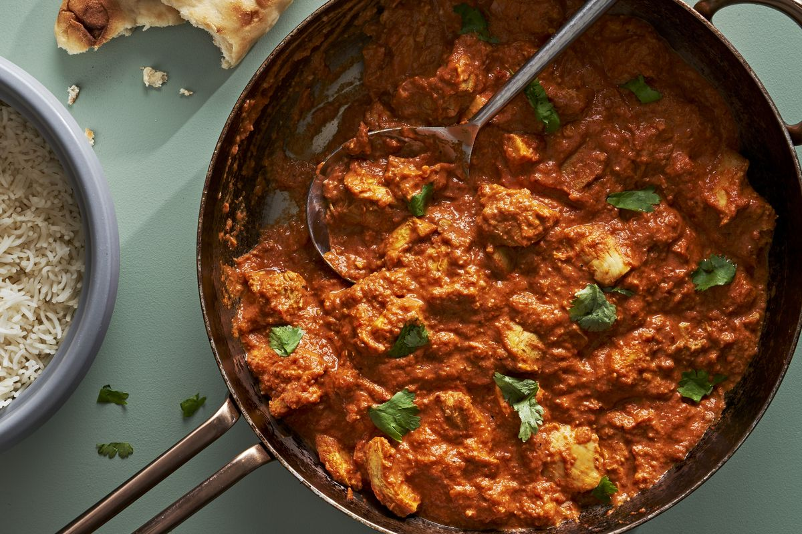

Butter Chicken

Description
Butter chicken is one of the most popular dishes at most Indian restaurants, and for good reason. This chicken dinner uses deeply flavored chicken thighs, simmered in an ultra-silky and aromatic sauce of tomatoes, cream, and cashews. The cashews lend a buttery nuttiness and great texture to the sauce in this recipe, but blanched almonds would also work well. For the ultimate weeknight dinner, spoon this dish over steamed rice or serve with warm naan.
Ingredients
Chicken Marinade
- 1/2 c. plain or Greek yogurt
- 1 (1") piece ginger, peeled and finely chopped or grated
- 2 cloves garlic, finely chopped or grated
- 2 tsp. garam masala
- 1 tsp. chili powder
- 1 tsp. ground cumin
- 1 tsp. ground turmeric
- Kosher Salt
- 2 lb. boneless, skinless chicken thighs, cut into 1 1/2" cubes
- 2 tbsp. neutral oil
Sauce
- 2 tbsp. ghee or unsalted butter
- 1 medium yellow onion, finely chopped
- Kosher salt
- 1 (1") piece ginger, peeled and finely chopped or grated
- 2 garlic cloves, finely chopped or grated
- 2 tsp. garam masala
- 1 tsp. ground cumin
- 1/2 tsp. Indian Kashmiri powder or cayenne pepper
- 1 (28-oz.) can crushed tomatoes
- 1 tsp. granulated sugar
- 1/4 c. unsalted roasted cashews
- 1/2 c. heavy cream
- Chopped cilantro, steamed rice, and naan, for serving
Directions
Chicken
- In a large bowl, whisk yogurt, ginger, garlic, garam masala, chili powder, cumin, turmeric, and 2 1/2 teaspoons salt. Stir in chicken and refrigerate at least 1 hour or up to 24.
- In a large high-sided skillet over medium-heat heat, heat oil. Add chicken to pan in an even layer and cook, undisturbed, until golden brown on bottom side, 8 to 10 minutes. Using a slotted spoon, transfer chicken to a bowl.
Sauce
- Without wiping out pan, combine ghee and onions; season with 1 teaspoon salt. Cook, stirring often, until golden brown, 8 to 10 minutes. Add ginger, garlic, garam masala, cumin, and Kashmiri powder and cook, stirring, until fragrant, 30 seconds to 1 minute. Pour in tomatoes and granulated sugar and bring to a simmer. Cook, stirring occasionally, until sauce thickens and deepens in color, 15 to 20 minutes.
- Transfer sauce to a blender, add cashews, and blend on high speed until very smooth. Pour sauce back into pan and stir in cream and chicken. Simmer until sauce is thickened and bubbling and chicken is cooked through, 5 to 8 minutes.
- Divide chicken among plates. Top with cilantro. Serve with rice and naan alongside.
End of recipe! Take me home!